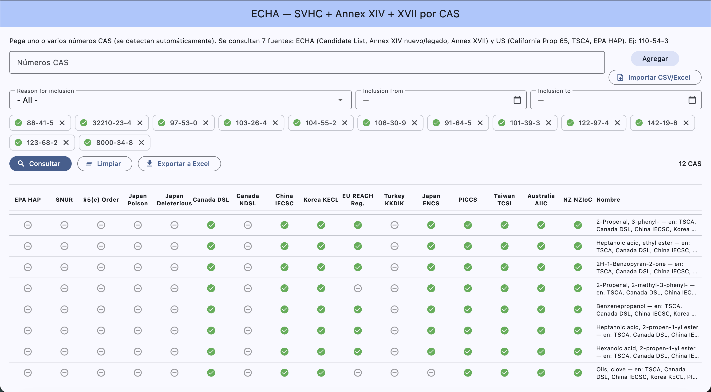

Paste one or more CAS numbers and instantly check which chemical lists and inventories worldwide each substance appears in. Results in a comparative table, exportable to Excel.

Paste text or prose: CAS numbers are detected and turned into chips, with no duplicates.
Load a file and extract every CAS from any column or sheet.
One row per CAS, one column per list (✓ / – / ⚠). Each row expands to show the details of every source.
Generates an .xlsx with Yes/No per list plus detail columns (inclusion date, sunset date, reason…).
Sources are queried concurrently per host, respecting each server's rate limits.
Windows installer or portable ZIP; standard .dmg on macOS.